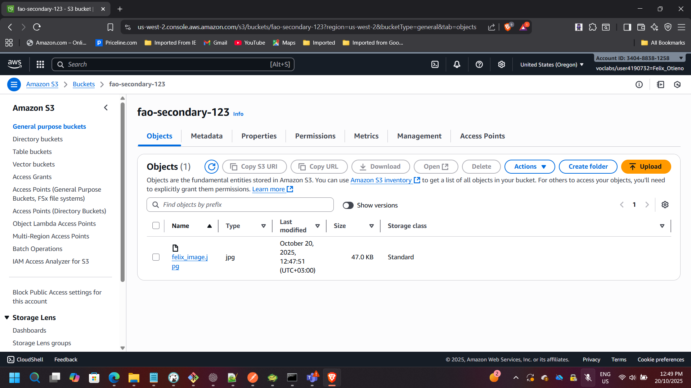
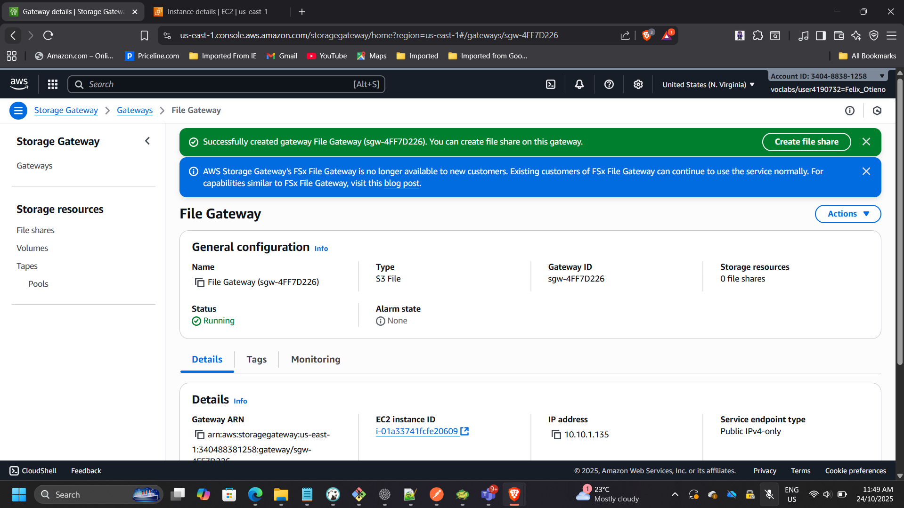
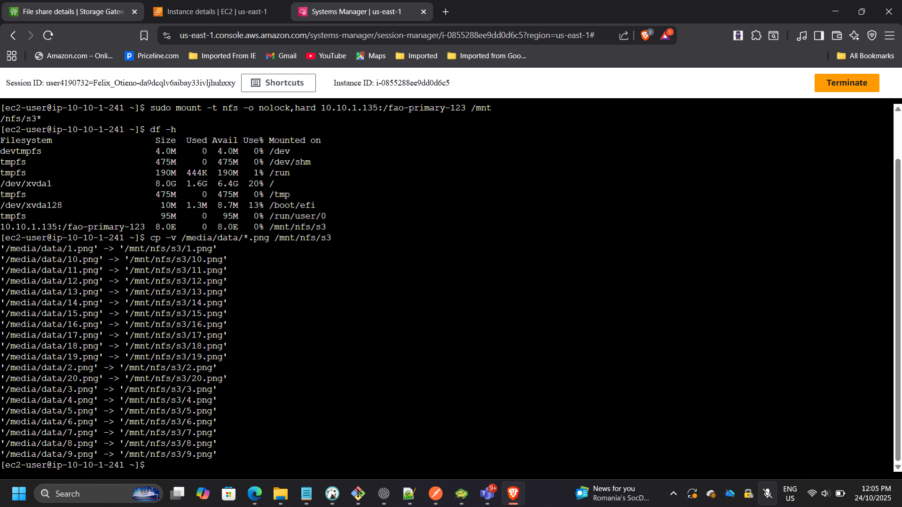
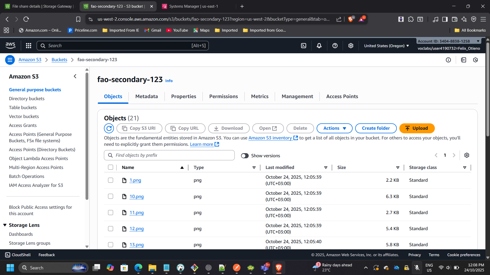

Project: Hybrid Storage and Data Migration with AWS Storage Gateway (S3 File Gateway)
Timeline: October 2025
Role: Solutions Architect & Cloud Engineer
Skills: AWS Storage Gateway, Amazon S3, Cross-Region Replication (CRR), IAM, NFS, EC2, Lifecycle Policies
Project Summary
Designed and implemented a hybrid cloud storage workflow using AWS Storage Gateway (S3 File Gateway) to simulate on-premises file storage and migrate data into Amazon S3 using an NFS file share. Enabled Cross-Region Replication (CRR) between us-east-2 (Ohio) and us-west-2 (Oregon) to provide disaster recovery and multi-region redundancy. Implemented S3 lifecycle policies to support storage management and cost optimization.
Objectives
- Deploy and activate an S3 File Gateway on Amazon EC2.
- Create primary and secondary S3 buckets in separate Regions.
- Enable S3 Cross-Region Replication (CRR).
- Mount the NFS file share on a Linux instance.
- Migrate on-premises data into Amazon S3.
- Validate end-to-end replication and hybrid data flow.
Implementation & Highlights
1. Reviewed the Architecture
- Simulated an on-premises Linux environment.
- Deployed an S3 File Gateway appliance.
- Established NFS connectivity between Linux server and S3.
- Designed replication between Ohio (primary) and Oregon (DR region).

2. Created Primary and Secondary S3 Buckets
Primary (Source) Bucket
- Region: us-east-2 (Ohio)
- Versioning enabled
Secondary (Destination) Bucket
- Region: us-west-2 (Oregon)
- Versioning enabled


3. Enabled Cross-Region Replication (CRR)
- Created replication rule:
crr-full-bucket - Applied rule to all objects
- Selected Oregon bucket as destination
- Assigned IAM replication role
- Uploaded test file and confirmed replication


4. Configured S3 File Gateway and Created an NFS File Share
- Gateway Type: Amazon S3 File Gateway
- Host Platform: Amazon EC2
- Instance Type: t2.xlarge
- Cache Storage: 150 GiB
- VPC/Subnet: On-Prem-VPC / On-Prem-Subnet
- Security Groups: FileGatewayAccess, OnPremSshAccess
Activated the gateway and confirmed status changed to Running.
Created an NFS file share:
- Linked to primary (Ohio) bucket
- Storage class: S3 Standard
- IAM role configured


Example NFS mount command:
sudo mount -t nfs -o nolock,hard 10.10.1.135:/fao-primary-123 /mnt/nfs/s3
5. Mounted the File Share and Migrated Data
Verified source data:
ls /media/data
Created mount directory:
sudo mkdir -p /mnt/nfs/s3
Mounted NFS share:
sudo mount -t nfs -o nolock,hard 10.10.1.33:/lab-nfs-bucket /mnt/nfs/s3
Verified mount:
df -h
Copied image files:
cp -v /media/data/*.png /mnt/nfs/s3


6. Verified Data Migration and Replication
- Confirmed 20 image files present in source (Ohio) bucket.
- Verified automatic replication in destination (Oregon) bucket.
- Validated hybrid path: Linux → NFS → S3 (Ohio) → CRR → S3 (Oregon)


Outcome & Impact
- Successfully implemented a hybrid storage integration model.
- Demonstrated enterprise-style migration from on-prem file server to AWS.
- Implemented multi-region disaster recovery via CRR.
- Validated secure, scalable, and resilient data architecture.